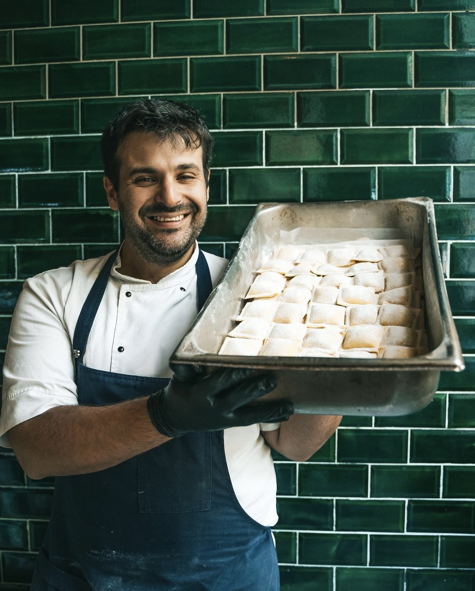

Massey Familia
Restaurante, Almacén & Bakery
En nuestro almacén, ofrecemos productos frescos, hechos todos los días hasta agotar stock. Utilizamos ingredientes de alta calidad en cada una de nuestras pastas. Nos aseguramos de seleccionar los mejores ingredientes y de preparar nuestras pastas frescas diariamente. Creemos que la frescura es esencial para captar los sabores.
Nuestro almacén encontraras una amplia variedad de pastas y salsas. Listas para cocinar en tu casa! También vendemos otros productos de calidad. Estos productos han sido elegidos con el mismo cuidado y atención que ponemos a nuestras pastas frescas.
